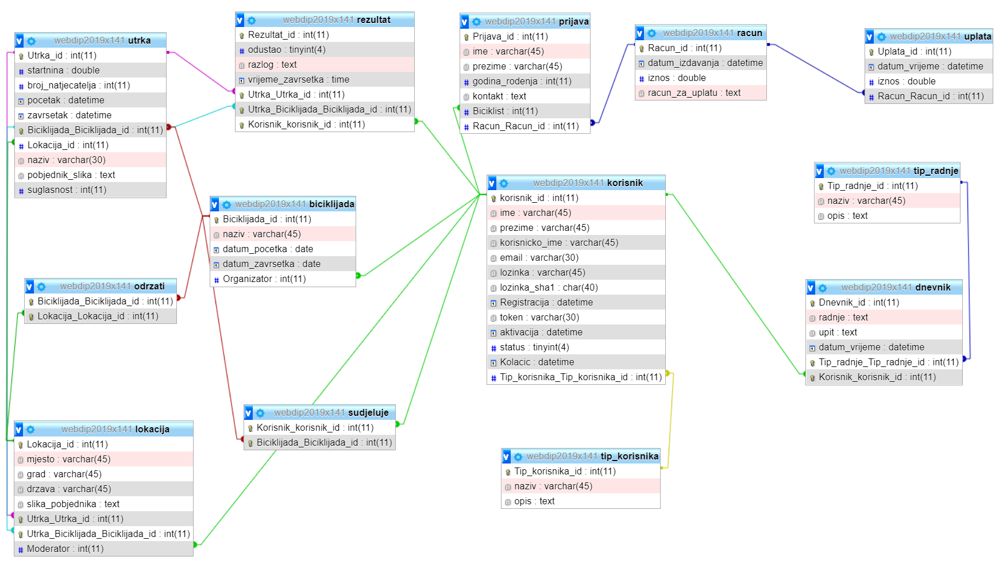

Projektno riješenje čini sustav za evidenciju biciklističkih utrka podijeljen po ulogama.
Projektno riješenje sastoji se od...
Za realizaciju projekta korišteni su HTML, PHP, JavaScript te alati Visual Studio Code, phpmyadmin, drawio.net, xampp
Nisu korištene nikakve biblioteke koje nisu spomenute na nastavi. Za realizaciju baze podataka (baza.class.php) i za realizaciju sesije (sesija.class.php) preuzete su datoteke sa sustava Moodle na stranicama kolegija Web dizajn i progamiranje. Za pripomoć u radu korištene su stranice w3scools-a i stackoverflow-a.